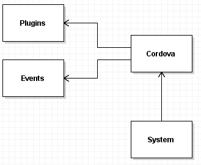
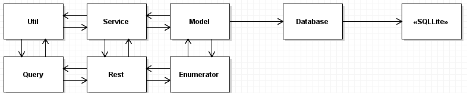
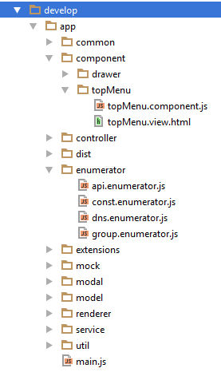

AppMobile Framework jest sandboxowyą niezależną biblioteką do tworzenia aplikacji mobilnych pod Cordova zbudowaną w oparciu o jQuery. Framework udostępnia podstawową architekturę View-Controller, nastomiast Model jest opcjonalny. Dodatkowo umożliwia tworzenie komponentów wspólnych, udostępnia CRUD do bazy lokalnej SQLLite, tworzenie enumeratorów, okien modalnych, zmiennych globalnych, mocków restów, restów, modelu bazy danych, wrapowania pluginów, pisania zapytań SQL, rejstrowania serwisów oraz utilów. Dodatkowo wspiera wielojęzyczność. Założeniem projektu było proste i szybkie budowanie aplikacji mobilnych w oparciu o JavaScript, framework miał udstpępnić proste funkcjonalności tworzące warstwę abstrakcyjną dla developera z jednoczesnym zachowaniem dużej swobody i prostej konfiguracji podstawowych funkcji. AppMobile Framework jest przeciwieństwem frameworków takich jak Ionic, które wymagają dużej znajomości api oraz narzucają rozwiązania frontendowe.
Architektura frameworku oparata jest o wzorzec View-Controller. Wszystkie obiekty są statyczne, stąd panuje duża swoboda w używaniu obiektów budowanych przez developera w oparciu o framework w praktycznie dowolnym miejscu poprzez statyczne odniesienie. Tym samym, framework nie potrzebuje systemu wstrzykiwania zależności, czym jest łatwiejszy w użyciu oraz przyjemniejszy dla programisty ze względu na podpowiedzi w IDE.

Powyższy schemat prezentuje architekturę dla integracji z Cordova. Programista może wrappować pluginy Cordova oraz nadpisywać podstawowe eventy aplikacji mobilnej, które są później nadpisywane i procesowane przez Cordovę i framework.

Powyższy schemat prezentuje architekturę dla pozostałych statycznych elementów frameworku oraz integracji z lokalną bazą danych SQLLite. Komponenty typu Util, Service, Model, Query, Rest, Enumerator mogą być statycznie używane między sobą. Dodatkowo element Database odpowiedzialny za obsługę bazy danych, może wykorzystać Model do budowania bazy danych.
AppMobile Framework narzuca ogólną architekturę aplikacji opartą o sprawdzone wzorce.
Narzucona struktura plików dotyczy się trzech głównych komponentów: app.componentapp.controllerapp.modal
Aczkolwiek w prezentowanym przykładzie oraz zasadach struktury wszystko jest uporządkowane zgodnie z naszym poczuciem porządku jaki wyznaczamy tym frameworkiem.
Założenia dla struktury projektu Cordova
www jest katalogiem docelowym dla wszystkich postkompilatów, bibliotek, plików sql, czcionek, zminimalizowanych wersji jsdevelop w głównym folderze projektudevelop/appdevelop/css, develop/less, develop/sassdevelop/fonts i są przenoszone do www/fontsdevelop/img i są przenoszone do www/imgdevelop/sql i są przenoszone do www/sqlindex.html znajduje się w develop i jest przenoszony do wwwwww jest czyszczony podczas budowania projektu
Założenia dla struktury projektu AppMobile (odnosimy się do develop/app)
controller jako katalogi o nazwie kontrolera oraz para plików: nazwaKontrolera.controller.js oraz nazwaKontrolera.view.htmlcomponent jako katalogi o nazwie komponentu oraz para plików: nazwaKomponentu.component.js oraz nazwaKomponentu.view.htmlmodal jako katalogi o nazwie modala oraz para plików: nazwaModala.modal.js oraz nazwaModala.view.htmlnazwaPliku.typPliku.js dla przykładu serwis o nazwie Authorization będzie w pliku o nazwie authorization.service.jsproductGroup.enumerator.js umieścimy w katalogu enumeratorPrzykładowe drzewo projektu:

Framework posiada główną klasę systemową oferującą podstawowe metody oraz właściwości frameworka
app.ctx zawiera obiekt aktualnie wyrenderowanego kontrolera
app.mCtx zawiera obiekt aktualnie wyrenderowanego okna modalnego
app.online wartość boolean oznaczająca połączenie z siecią
app.system.renderModal(modal, data) renderuje okno modalne, przyjmuje na wejściu okno modalne oraz dane wejściowe metody init
app.system.renderModal(app.modal.ExitApp); //metoda może przyjmować tylko jeden parametr jakim jest okno modalne
app.system.renderModal(app.modal.ExitApp, {
message: "Are you sure?"
});
app.system.render(controller, data, callback) renderuje kontroler, przyjmuje na wejściu kontroler oraz dane wejściowe metody init, może również przyjmować callback wykonywany po całkowitym zakończeniu renderowania (w tym metody init)
app.system.render(app.controller.Login); //metoda może przyjmować tylko jeden parametr jakim jest kontroler
app.system.render(app.controller.Login, {
username: "test@test.pl"
});
app.system.render(app.controller.Login, null, function(){
//wykonywane po zakończeniu renderowania oraz wykonaniu metody init()
});
app.system.exit() metoda wykonuje akcję navigator.app.exitApp() powodującą wyłączenie aplikacji
app.system.init(callBack) funkcja startuje całą aplikację, dodatkowo przyjmuje callback wykonywany po wyrenderowaniu pierwszego kontrolera zdefiniowanego jako
app.config.mainController
AppMobile Framework posiada bardzo prostą konfigurację składającą się z kilku zmiennych.
Aby nadpisać domyślną konfigurację, używamy metody app.config.extend
app.config.extend({
mobileRun: false, //określa, czy aplikacja działa w trybie natywnym czy przeglądarkowym
mockApi: true, //określa, czy aplikacja ma korzystać z mocków RESTowych
mainController: "Welcome", //określa nazwę kontrolera renderowanego po uruchomieniu aplikacji
viewsPath: './view', //określa główną ścieżkę do struktury katalogów widoków
lang: "pl", //określa domyślny język aplikacji
dbMode: 'create-drop', //określa tryb tworzenia bazy danych
dbTestMode: true, //określa czy baza danych jest w trybie testowym
dbCreateDropFromScript: false, //określa czy baza danych jest tworzona poprzez skrypty SQL
dbCreateScript: './sql/create.sql', //określa ścieżkę do pliku tworzącego bazę danych
dbDropScript: './sql/drop.sql', //określa ścieżkę do pliku usuwającego bazę danych
dbTestScript: './sql/test.sql', //określa ścieżkę do pliku tworzącego testowe dane
dbProductionScript: './sql/production.sql', //określa ścieżkę do pliku tworzącego dane produkcyjne
});
Oczywiście programista może do obiektu rozszerzającego dodać własne zmienne.
AppMobile Framework udostępnia w wygodny sposób możliwość nadpisania eventów natywnych poprzez Cordova.
Eventy dodatkowo są rozszerzone poprzed plugin Network do sprawdzania statusu ONLINE/OFFLINe.
Przykładowe nadpisanie eventu offline :
app.events.extend("offline", function () {
//wywołany w momencie gdy aplikacja jest w trybie offline
});
Udostępnione są następujące eventy:
onOffline lub offline wywoływane przy renderowaniu kontrolera/okna modalnego w przypadku kiedy nie ma połączenia z siecią
onOnline lub online wywoływane przy renderowaniu kontrolera/okna modalnego w przypadku kiedy jest połączenie z siecią
onBack lub back wywoływane po renderowaniu kontrolera/okna modalnego w przypadku kiedy wykonana jest akcja powrotu
domEvents lub dom wywoływane przy starcie aplikacji, umożliwia dodanie eventów do DOM
Framework nie ingeruje w instalację i zarządzenie pluginami. Umożliwia jedynie usystematyzowanie ich we wspólne api.
Dodatkowo umożliwia to testowanie aplikacji w pełni w postaci przeglądarkowej, ze względu na wrappowanie pluginów.
Rejestrowanie wrapperów pluginów odbywa się dwojako:
app.plugins.wrapList(pluginsList) przyjmujący na wejściu listę pluginów
app.plugins.wrap(pluginName, wrapperBody) przyjmujący na wejściu nazwę pluginu oraz obiekt wrappera
Zakładamy, że nasza aplikacja ma zainstalowany cordova-plugin-barcodescanner i chcielibyśmy, aby testować jego działanie także podczas testów przeglądarkowych.
Przykładowe implementacje w ramach rejestrowania listy oraz pojedynczo:
app.plugins.wrap("scanner", {
scan: function (successCallback, errorCallback) {
if (app.config.mobileRun) {
//przypadek kiedy aplikacja działa na telefonie
cordova.plugins.barcodeScanner.scan(
function (result) {
successCallback(result.text, result.format, result.cancelled);
}, function (error) {
errorCallback(error);
});
} else {
// przypadek kiedy testujemy w przeglądarce
successCallback('5755338016197', 'EAN-13', false);
}
}
});
lub
app.plugins.wrapList({
scanner: {
scan: function (successCallback, errorCallback) {
if (app.config.mobileRun) {
//przypadek kiedy aplikacja działa na telefonie
cordova.plugins.barcodeScanner.scan(
function (result) {
successCallback(result.text, result.format, result.cancelled);
}, function (error) {
errorCallback(error);
});
} else {
// przypadek kiedy testujemy w przeglądarce
successCallback('5755338016197', 'EAN-13', false);
}
}
}
}
});
Aby wywołać plugin, odnosimy się do obiektu wrappującego i tym samym możemy testować aplikację wraz z pluginami w przeglądarce.
app.plugins.wrapper.scanner.scan(function(code, format, cancelled){
},function(error){
});
Programista ma możliwość za pomocą klasy app.global rejestrowania zmiennych globalnych w wygodny i uporządkowany sposób.
Przykładowe utworzenie zmiennej globalnej w postaci pojedynczej lub listy zmiennych:
app.global.define("globalVariable", 1);
app.global.defineMap([
{
name: "globalVariable1",
initial: null
},
{
name: "globalVariable2",
initial: true
}
]);
Dostęp do zmiennych odbywa się poprzez setter set(value) oraz getter get
app.global.globalVariable.get(); //zwraca wartość zmiennej globalnej
app.global.globalVariable.set(false); //ustawia wartość zmiennej globalnej
lub bez api
var x = globalVariable; //przypisuje wartość zmiennej globalnej do zmiennej x
globalVariable = 2; //ustawia wartość zmiennej globalnej na 2
Kontrolery w AppMobile Framework tworzymy jako parę kontroler-widok. Kontroler jest głównym elementem składowym aplikacji. Podstawowy kontroler wygląda następująco:
app.controller.register("Login", {
components: [],
view: 'main',
init : function(){}
});
Element components jest listą nazw komponentów użytych w widoku kontrolera. Nie jest wymagany.
Pole view jest nazwą elementu DOM w którym widok kontrolera ma być generowany.
Aby kontroler wyrenderował widok, należy w pliku index.html dodać następujący element:
Pole view w kontrolerze jest niewymagane, domyślnie ustawione na wartość view
W aplikacji może być wyświetlony tylko jeden kontroler jednocześnie. Do kontrolera nie odwołujemy się statycznie, tylko poprzed obiekt app.ctx
oznaczający kontekst kontrolera. Przykładowo chcąc pobierać selektory z widoku kontrolera, odnosimy się poprzez właśnie kontekst.
Przykładowy widok do kontrolera:
Chcąc pobrać selektor jQuery elementu o identyfikatorze inputName korzystamy z następującej funkcji:
app.ctx.selector.inputName(); //pobiera selektor jQuery
Kontroler posiada domyślny obiekt do trzymania danych app.ctx.data domyślnie ustawiony jako {}
Aby wyrenderować kontroler, należy użyć funkcji app.system.render
Dodatkowo, przyjmuje ona także drugi parametr który jest wprowadzany do funkcji init
app.system.render(app.controller.Login); //renderuje kontroler Login
app.system.render(app.controller.Login, { username: "Dawid", password: "xxx" });
app.controller.register("Login", {
init : function(dataFromRender){
app.ctx.data = dataFromRender;// przypisuje obiekt { username: "Dawid", password: "xxx" }
}
});
Jeżeli parametr data nie zostanie wprowadzony, domyślnie ustawiany jest jako null
Modale w AppMobile Framework tworzymy jako parę kontroler-widok. Modal jest dodatkowym elementem aplikacji, o współbierznym kontekście do kontrolera który go wywołuje.
Jednocześnie możemy wywołać jedno okno modalne. Okna modalne oparte są o Bootstrap
Podstawowy kontroler okna modalnego wyląda następująco:
app.modal.register("ExitApp", {
init: function(){}
});
Aby okno modalne mogło wyrenderować widok, należy w pliku index.html dodać następujący element:
W aplikacji może być wyświetlony tylko jedno okno modalne jednocześnie. Do okna modalnego nie odwołujemy się statycznie, tylko poprzed obiekt app.mCtx
oznaczający kontekst kontrolera modala. Przykładowo chcąc pobierać selektory z widoku modala, odnosimy się poprzez właśnie kontekst.
Przykładowy widok modala w oparciu o Bootstrap:
Uwaga! Główny element DOM w widoku modala musi być opatrzony atrybutem mainmodal
Chcąc pobrać selektor jQuery elementu o identyfikatorze btnYes korzystamy z następującej funkcji:
app.mCtx.selector.btnYes(); //pobiera selektor jQuery
Kontroler modala posiada domyślny obiekt do trzymania danych app.mCtx.data domyślnie ustawiony jako {}
Aby wyrenderować modal, należy użyć funkcji app.system.renderModal
Dodatkowo, przyjmuje ona także drugi parametr który jest wprowadzany do funkcji init
app.system.renderModal(app.modal.ExitApp); //renderuje kontroler Login
app.system.renderModal(app.modal.ExitApp, { message: "Are you sure?" });
app.modal.register("ExitApp", {
init : function(dataFromRender){
app.mCtx.data = dataFromRender;// przypisuje obiekt { message: "Are you sure?" }
}
});
Jeżeli parametr data nie zostanie wprowadzony, domyślnie ustawiany jest jako null
Komponenty w AppMobile Framework tworzymy jako parę kontroler-widok. Podstawowy komponent wygląda następująco:
app.component.register("TopMenu", {
init: function () {}
});
Natomiast widok do tego komponentu to:
Komponent nie posiada kontekstu tak jak w przypadku okien modalnych czy kontrolerów. Można go wykorzystywać za pomocą referencji globalnej:
app.component.TopMenu
Aby używać selektorów z widoku komponentu, działamy tak samo jak w przypadku okien modalnych czy kontrolerów:
app.component.TopMenu.selector.backButton(); //pobiera obiekt jQuery
Dopiszmy event do naszego przycisku:
app.component.register("TopMenu", {
init: function () {
app.component.TopMenu.selector.backButton().click(function(){
//button clicked!
});
}
});
Jeżeli chcemy aby komponent wyświetlił się w danym miejscu, wystarczy dodać w widoku kontrolera następujący kod:
Uwaga! Nazwę komponentu zaczynamy z małej litery.
Dodatkowo w kontrolerze należy dodać komponent do listy komponentów:
app.controller.register("Login", {
components: ["TopMenu"],
view: 'main',
init : function(){}
});
Framework posiada mechanizm generowania oraz bindowania list. Polega to na wygenerowaniu listy na podstawie templatki i zestawu danych oraz wstrzyknięcia gotowego html
do wybranego selektora.
Renderer posiada dwie właściwości przekazywane w templatce:
text(nazwaParametru) przyjmuje na wejściu nazwę parametru z obiektu listy przekazywanej do renderera
event(nazwaFunkcji) przyjmuje na wejściu nazwę funkcji z obiektu przekazywanego do renderera jako bindings
Przykładowa definicja renderera listy:
app.renderer.define("ShopList", function(){
var template = '';
template += '
Metoda app.renderer.define() może przyjmować jako argument drugi zarówno stringa jak i funkcję zwracającą stringa. Implementacja użycia tego renderera:
//na wejściu selektor listy z widoku kontrolera/komponentu
app.renderer.ShopList.render(app.ctx.selector.shopList(),
[
{
name: 'Piotr i Paweł', //wartość wstawiana w miejsce text(name)
city: 'Szczecin' //wartość wstawiana w miejsce text(city)
},
{
name: 'Castorama',
city: 'Koszalin'
}
],
{
showDetails: function(e){
//realizuje event dla buttona "Szczegóły" z templatki
},
});
Aby pobrać kontekst klikanego elementu, wystarczy wybrać obiekt e.eCtx
Obiekt e.eCtx posiada wartość, jaka została wprowadzona do renderera. Dla przykładu, wartość po kliknięciu na button wywołujący showDetails pierwszego elemetu listy, będzie odpowiadać obiektowi pierwszego elementu listy danych.
showDetails: function(e){
var obj = e.eCtx; //posiada obiekt kontekstu dla klikanego elementu, czyli obiekt z listy
}
Co przykładowo zwraca:
{
name: 'Castorama',
city: 'Koszalin'
}
Framework umożliwia definiowanie zbiorów zapytań SQL. Można zarówno definować pojedyncze zapytanie jak i listę. Dodatkowo w przypadku listy można grupować zapytania.
Przykładowa definicja pojedynczego zapytania:
app.query.define("selectAllUser", "select * from user");
app.query.define("selectUser", "select * from user where id = ?");
app.query.define("selectUser2", "select * from user where id = :id");
Aby wybrać zapytanie oraz wprowadzić parametry piszemy:
var sql = app.query.selectAllUser.sql //pobieramy samego sql
var sql2 = app.query.selectUser.bind([1]); //wprowadzamy listę wartości
var sql3 = app.query.selectUser2.bind({
id: 2
}); //wprowadzamy obiekt
W przypadku definicji listy zapytań, mechanizm bindowania i pobierania danych jest identyczny. Przykładowa definicja listy zapytań:
app.query.defineList([
{
name: "deleteFromClientByName",
sql: "delete from Client where name = ?"
},
{
name: "selectUserAll",
sql: "select * from User"
}
]);
Aby zgrupować zapytania, wystarczy dodać pole group do obiektu listy.
Grupowanie jest niemożliwe w przypadku pojedynczych definicji zapytań.
app.query.defineList([
{
name: "selectUserById",
sql: "select * from User where id = ?",
group: 'user'
},
{
name: "selectUserByName",
sql: "select * from User where name = ?",
group: 'user'
}
]);
W tym przypadku zgrupowaliśmy zapytania selectUserById i selectUserByName
Aby je wybrać wystarczy odnieść się do obiektu grupy przed obiektem zapytania:
var sql1 = app.query.user.selectUserById.bind([1]);
var sql2 = app.query.user.selectUserByName.bind(["antek"]);
Obiekt app.crud służy do budowania zapytań SQL do bazy SQLLite oraz ich wywoływania.
Przykładowe wywołanie zapytania SQL i zwrócenie danych:
app.crud.execute("select * from user", function (userList) {
//callback w przypadku prawidłowego zapytania
}, function(){
//opcjonalny callback w przypadku wystąpienia błędu
});
app.crud.execute(sql, successCallback, errorCallback) Służy do wywoływania zapytań na bazie SQLLite.
sql może być zarówno funkcją zwracającą zapytanie, jak i stringiem.
successCallback jest opcjonalny, na wejściu przyjmuje obiekt wynikowy oraz w przypadku metody INSERT - id
errorCallback jest opcjonalny, brak wejściowych parametrów
app.crud.builder Służy do budowania zapytań SQL i oferuje następujące funkcje:
app.crud.builder.findById(tableName, id)
app.crud.builder.deleteById(tableName, id)
app.crud.builder.drop(tableName)
app.crud.builder.count(tableName)
app.crud.builder.create(tableName, columns)
app.crud.builder.findAll(tableName)
app.crud.builder.insert(tableName, values, columns)
app.crud.builder.update(tableName, id, values, columns)
Framework umożliwia operowanie na lokalnej bazie danych SQLLite. Z tego względu udostępnia możliwość generowania bazy danych w oparciu o model oraz o skrypty SQL. Podstawowy wygląd modelu:
app.model.define(
"Client", //nazwa tabeli - wielkość liter bez znaczenia
["username", "password"] //lista kolumn
);
Kolumny są automatycznie poszerzane o kolumnę "id integer primary key". Dodatkowo, wartości boolean w zapytaniach są automatycznie procesowane przez framework na
wartości typu tekstowego bool_true oraz bool_false w obie strony, co dla wyników zapytań jest transparentne.
Jeżeli w konfiguracji zmienna dbCreateDropFromScript = false to framework buduje bazę danych w opaciu o zadeklarowany model.
Obiekt modelu posiada dodatkowo następujące pola:
table zawiera nazwę tabeli (notacją UPPERCASE)
columns zawiera listę kolumn (bez id)
columnsAll zawiera listę kolumn
dropSQL zawiera zapytanie SQL DROP TABLE
createSQL zawiera zapytanie SQL CREATE TABLE
findAllSQL zawiera zapytanie SQL SELECT *
Modelu możemy używać do uspójnienia danych w przypadku zapytań do bazy danych.
Poniżej znajduje się przykładowe wykorzystanie modelu w budowaniu zapytania używając app.crud.
var insertClientSQL = app.crud.builder.insert(
app.model.Client.table,
["login", "haslo"],
app.model.Client.columns
);
app.crud.execute(insertClientSQL, function (lastId) {
//TODO
});
Klasa stricte architektoniczna, bez specjalnych właściwości. Umożliwia definowanie enumeratorów w postaci obiektu.
Przykładowy enumerator:
app.enumerator.register("ProductGroup", {
alcohol : 'ALCOHOL',
vegetables : 'VEGETABLES',
fruits : 'FRUITS'
});
Następnie w dowolnym miejscu możemy używać zdefiniowanej klasy:
app.enumerator.ProductGroup.
Framework umożliwia definiowanie własnych serwisów. Mają one jedynie charakter architektoniczny i nie posiadają żadnych specjalnych właściwości. Są instancjami statycznymi.
Zgodnie z ogólnie przyjętymi wzorcami, serwisy odpowiadają za logikę biznesową aplikacji oraz stanowią warstwę komunikacyjną między kontrolerem a bazą danych/zasobami REST
app.service.register("Auth", {
login: function(username, password){
//rest calls etc
}
});
Aby wywołać metodę serwisu odnosimy się do obiektu app.service
app.service.Auth.login("login", "pass");
Framework umożliwia definiowanie własnych utili. Mają one jedynie charakter pomocniczy i nie posiadają żadnych specjalnych właściwości. Są instancjami statycznymi.
app.util.register("General", {
isNull: function(obj){
//check if null
}
});
Aby wywołać metodę utila odnosimy się do obiektu app.util
app.util.General.isNull(null);
Framework appMobile umożliwia obsługę wielu języków.
Framework umożliwia stworzenie mocków komunikacji serwer-aplikacja.